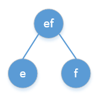
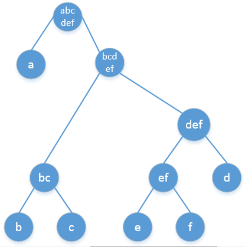
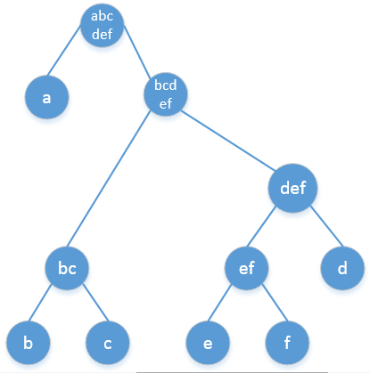

霍夫曼编码是一种无损编码方法，它是无损编码方案中最优的，基本思想是给出现频率高的字符以较短的编码，给出现频率低的字符以长的编码。本文将介绍霍夫曼编码的算法步骤和具体实现。
二叉霍夫曼编码
前缀码： 没有任何一个编码是其他编码的前缀，这样的一套编码体系叫做前缀码。例如a的编码是010，那么不会存在编码是0，01，0101，0100，010**的字符。前缀码确保了解码时的唯一性。
霍夫曼编码的算法步骤： 1. 统计每个字符出现的频率，按照频率从大到小排序。 2. 找到出现频率最小的两个字符，把这两个字符作为左右孩子，添加一个节点作为它们共同的父亲节点，父亲节点的值是这两个字符频率的和。 3. 重复步骤2直到总概率为1为之。 4. 以上步骤构造了一颗二叉树，二叉树根的概率是1.从根开始，递归的标记每个节点，左孩子标记为0，右孩子标记为1，直到到达叶节点。 5. 从跟出发到每个叶节点经过的0–1路径就是该字符的编码。
下面看一个具体的例子： 假设一个文件中只包含a,b,c,d,e,f六种字符，它们的出现频率如下表所示：
| a | b | c | d | e | f | |
|---|---|---|---|---|---|---|
| 出现次数 | 45 | 13 | 12 | 16 | 9 | 5 |
| 出现频率 | 0.45 | 0.13 | 0.12 | 0.16 | 0.09 | 0.05 |
第一步，找到频率最小的两个，应该是e,f,我们把e和f的根记作ef，这个时候构造了一个二叉树，二叉树的根是ef,频率是(9+5)/100 = 0.14.  第二步，用ef代替e和f之后，继续寻找最小的两个节点，这个时候是b,c,我们把b和c的根记作bc,这个bc的频率是(12+13)/100 = 0.25.  第三步，继续寻找频率最低的节点，这个时候是d和ef. 我们把d和ef的根记作def,它的频率是(16+14)/100 = 0.3.
第三步，继续寻找频率最低的节点，这个时候是d和ef. 我们把d和ef的根记作def,它的频率是(16+14)/100 = 0.3.  第四步，继续寻找频率最小的两个值合并，这个时候是bc和def,我们记作bcdef,它的频率是0.55.
第四步，继续寻找频率最小的两个值合并，这个时候是bc和def,我们记作bcdef,它的频率是0.55.  第五步，继续寻找频率最小的两个值合并，这个时候只剩下两个值了，就是a和bcde,它们和的频率是1.  可以看到，我们最终形成了一颗二叉树，调整一下位置，使之更好看一些。编号之后的情况是这个样子：
第五步，继续寻找频率最小的两个值合并，这个时候只剩下两个值了，就是a和bcde,它们和的频率是1.  可以看到，我们最终形成了一颗二叉树，调整一下位置，使之更好看一些。编号之后的情况是这个样子：  从中可以得到每个字符的编码：
从中可以得到每个字符的编码：
| a | b | c | d | e | f |
|---|---|---|---|---|---|
| 00 | 0100 | 0101 | 0111 | 01100 | 01101 |
这就是整个霍夫曼编码过程。除了使用二进制编码，其实还可以使用多种不同的进制编码，只要扩展分支的数目就可以了。
N叉霍夫曼编码
举例来说，还是上面的例子，如果编码的数字允许使用0，1，2三个数字。那么霍夫曼编码的步骤变为：
- 设字符数量为K，则第一次选择num =
K-2*[(K-1)/2],[]代表下取整的意思。这里K=6，所以第一次寻找2个频率最低的字符，e,f.如果num=0,取2，如果num=1,取3. - 把找出来的字符的概率合并作为新的一项加入到队列中，原来的删掉，继续用1中的方法寻找直到最后剩下三个为止。
具体到这个问题，具体的过程为： 


 这个时候，得到的最优编码是：
这个时候，得到的最优编码是：
| a | d | c | b | e | f |
|---|---|---|---|---|---|
| 0 | 2 | 10 | 12 | 110 | 111 |
于此，我们可以很容易的推广到N叉霍夫曼编码，思想是一样的，都是贪心法和前缀码。
二叉哈夫曼编码的实现
下面给出二叉霍夫曼编码的C++实现的版本：
|
|